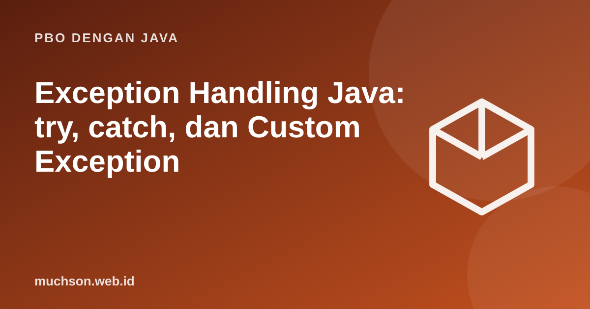

Beranda › Artikel › PBO dengan Java
PBO dengan JavaException Handling Java: try, catch, dan Custom Exception
Program nyata menghadapi hal tak terduga: berkas hilang, masukan salah, jaringan putus. Exception memisahkan alur normal dari penanganan kesalahan sehingga kode tetap bersih. Kuncinya bukan sekadar menangkap, tetapi memutuskan siapa yang berhak dan mampu menangani.
Sebaiknya sudah paham: method Java, inheritance

Setelah membaca dan mencoba materi ini, Anda mampu:
- menjelaskan hierarki Throwable, Error, dan Exception
- membedakan checked dan unchecked exception
- memakai try, catch, finally, dan try-with-resources
- membuat custom exception
- menerapkan praktik penanganan kesalahan yang baik
Hierarki exception
| Jenis | Contoh | Kompiler memaksa ditangani? | Penyebab umumnya |
|---|---|---|---|
| Checked | IOException, SQLException | Ya (try-catch atau throws) | Kondisi eksternal yang wajar terjadi |
| Unchecked | NullPointerException, IllegalArgumentException | Tidak | Kesalahan pemrograman atau pelanggaran kontrak |
| Error | OutOfMemoryError, StackOverflowError | Tidak | Masalah JVM; biasanya tidak ditangkap |
try, catch, finally
public class Main {
static int bagi(int a, int b) { return a / b; }
public static void main(String[] args) {
String[] masukan = {"10", "0", "abc", null};
for (String m : masukan) {
try {
int n = Integer.parseInt(m);
System.out.println("100 / " + n + " = " + bagi(100, n));
} catch (NumberFormatException e) {
System.out.println("bukan angka: " + e.getMessage());
} catch (ArithmeticException e) {
System.out.println("tidak boleh membagi nol");
} finally {
System.out.println(" (selesai memproses " + m + ")"); // selalu dijalankan
}
}
}
}100 / 10 = 10
(selesai memproses 10)
tidak boleh membagi nol
(selesai memproses 0)
bukan angka: For input string: "abc"
(selesai memproses abc)
bukan angka: Cannot parse null string
(selesai memproses null)
try-with-resources
Sumber daya seperti berkas atau koneksi harus ditutup walau terjadi kesalahan. Cara modern: deklarasikan di tanda kurung try; objek yang mengimplementasikan AutoCloseable ditutup otomatis.
class Sumber implements AutoCloseable {
private final String nama;
Sumber(String nama) { this.nama = nama; System.out.println("buka " + nama); }
void pakai(boolean gagal) {
if (gagal) throw new IllegalStateException("gagal memakai " + nama);
System.out.println("pakai " + nama);
}
@Override public void close() { System.out.println("tutup " + nama); }
}
public class Main {
public static void main(String[] args) {
try (Sumber a = new Sumber("A"); Sumber b = new Sumber("B")) {
a.pakai(false);
b.pakai(true);
} catch (IllegalStateException e) {
System.out.println("ditangkap: " + e.getMessage());
}
}
}buka A
buka B
pakai A
tutup B
tutup A
ditangkap: gagal memakai B
Exception sendiri
class SaldoTidakCukupException extends Exception { // checked
private final double kekurangan;
SaldoTidakCukupException(double kekurangan) {
super("saldo kurang Rp" + String.format("%.0f", kekurangan));
this.kekurangan = kekurangan;
}
double getKekurangan() { return kekurangan; }
}
class Rekening {
private double saldo;
Rekening(double saldo) { this.saldo = saldo; }
void tarik(double jumlah) throws SaldoTidakCukupException { // mendeklarasikan
if (jumlah > saldo) throw new SaldoTidakCukupException(jumlah - saldo);
saldo -= jumlah;
}
}
public class Main {
public static void main(String[] args) {
Rekening r = new Rekening(100_000);
try {
r.tarik(150_000);
} catch (SaldoTidakCukupException e) {
System.out.println(e.getMessage() + " (kurang " + e.getKekurangan() + ")");
}
}
}saldo kurang Rp50000 (kurang 50000.0)
Gunakan checked exception bila pemanggil bisa dan diharapkan pulih dari kondisi itu. Gunakan unchecked untuk kesalahan pemrograman (argumen null, indeks salah). Banyak kerangka kerja modern lebih menyukai unchecked agar kode tidak tertutup blok try-catch.
Praktik yang baik
- Jangan menelan exception: catch kosong menyembunyikan bug. Minimal catat log.
- Tangkap yang spesifik, bukan
catch (Exception e)serampangan. - Tangani di tempat yang mampu memperbaiki atau menerjemahkannya; biarkan sisanya naik.
- Sertakan penyebab saat membungkus:
throw new LayananException("gagal", e). - Jangan memakai exception untuk alur normal; periksa kondisi lebih dulu jika murah.
- Pesan error harus membantu: apa yang gagal, dengan nilai apa.
public class Main {
static void layanan() {
try {
Integer.parseInt("x");
} catch (NumberFormatException e) {
throw new IllegalStateException("konfigurasi port rusak", e); // bungkus dengan penyebab
}
}
public static void main(String[] args) {
try { layanan(); }
catch (IllegalStateException e) {
System.out.println(e.getMessage());
System.out.println("penyebab: " + e.getCause());
}
}
}konfigurasi port rusak
penyebab: java.lang.NumberFormatException: For input string: "x"
1. Tulis metode yang membaca bilangan dari String dan mengembalikan 0 jika tidak valid, tanpa melempar exception.
2. Mengapa catch (Exception e) {} kosong berbahaya?
3. Ubah SaldoTidakCukupException menjadi unchecked. Apa yang berubah pada tanda tangan tarik?
4. Apa yang tercetak bila try mengembalikan nilai dan finally juga mengeluarkan return?
- Throwable → Error dan Exception; RuntimeException dan Error bersifat unchecked.
- try/catch/finally dan try-with-resources mengatur penanganan dan pembersihan.
- Custom exception menyampaikan kesalahan domain dengan data yang berguna.
- Jangan telan exception; tangkap yang spesifik; bungkus dengan penyebab.
Tanya jawab
Apa bedanya throw dan throws?
Apakah exception lambat?
Bolehkah menangkap beberapa exception dalam satu catch?
Referensi
- Oracle: Exceptions (Java Tutorials)
- Oracle: The try-with-resources Statement
- Joshua Bloch, Effective Java (edisi ke-3, Addison-Wesley, 2018)
- The Java Language Specification